Varieties of Gypsum Crystals
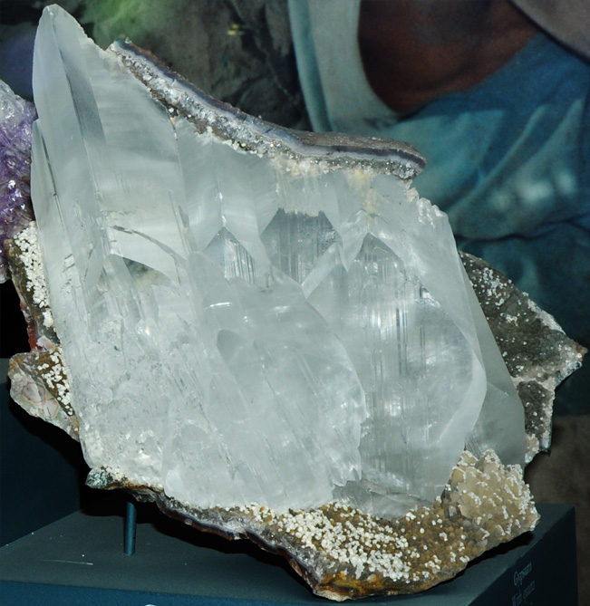
| CaSO4.2H2OThese are some of the samples of gypsum which are on display at the Smithsonian Museum of Natural History. The sample at left is gypsum formed with quartz and is from Irai, Rio Grande do Sul, Brazil. It is about 20 cm wide.
|
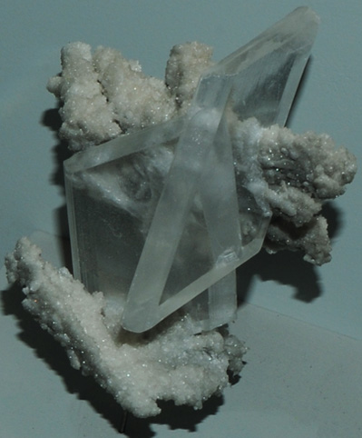
This is gypsum from Naica, Chihuahua, Mexico. It is about 10 cm wide. | 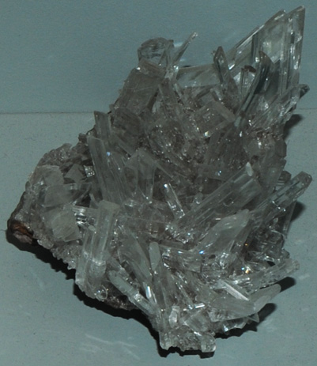 This gypsum sample is from Santa Eulalia, Chihuahua, Mexico. It is about 12 cm wide. |
|
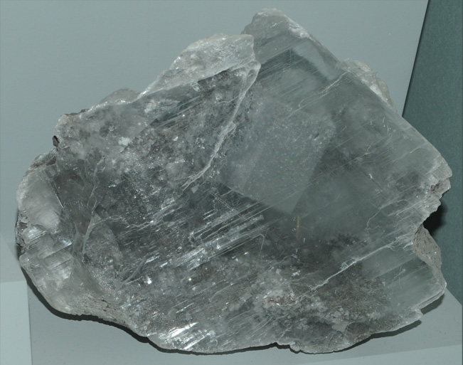 |
At left is gypsum with fluorite inclusions. It is from Penfield quarry, Penfield, New York. The sample is about 15 cm wide. 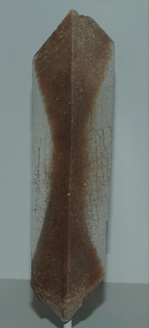This gypsum with sand inclusions from Cherokee Flats, Oklahoma. It is about 12 cm high. |
This is gypsum with sand inclusions. It is from Cherokee Flats, Oklahoma. It is about 30 cm long. | 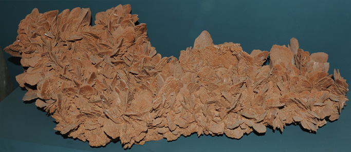 |
|
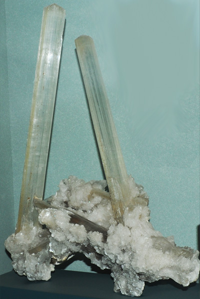 |
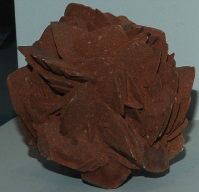
This is gypsum with sand inclusions from Cave of Swords, Naica, Chihuahua, Mexico. The sample is about 10 cm wide.
The large sample of gypsum at left is from Maravilla mine, Naica, Chihuahua, Mexico. It is about 30 cm wide and 50-60 cm high. Such water-clear crystals of gypsum are called selenite. That name comes from the Greek word selene meaning "moon", a reference to the whitish reflections off the crystal faces. |
| 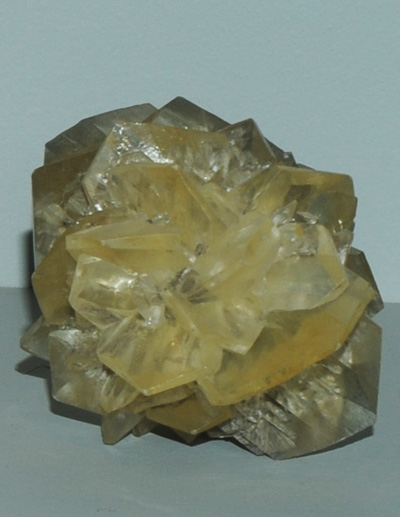 This is gypsum from Red River floodway, Winnipeg, Manitoba, Canada. It is about 6 cm in diameter. | 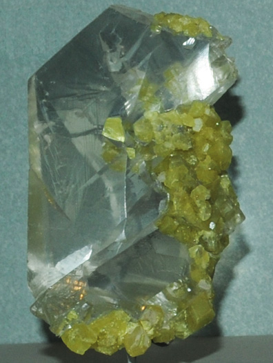 This is gypsum with sulfur from Agrigento, Sicilia, Italy. It is about 7 cm wide. |
| 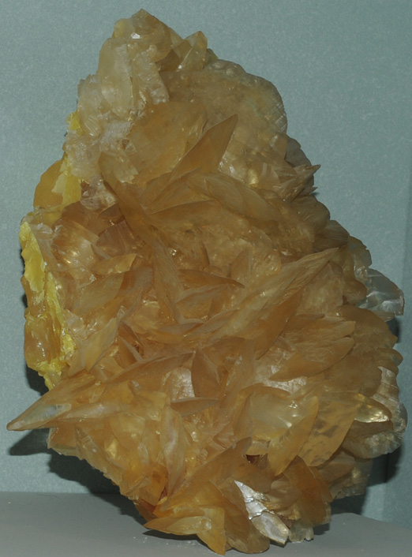 | This is gypsum with sulfur from Cianciana, Agrigento, Sicilia, Italy. It is about 20 cm wide. 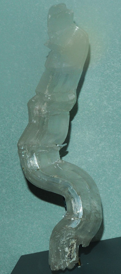
This large bent crystal of gypsum is from Friedrichsroda, Thuringen, Germany. It is about 25 cm high. |
Twinned crystals of gypsum from Pita, Poland. The sample is about 10 cm wide at the base. | 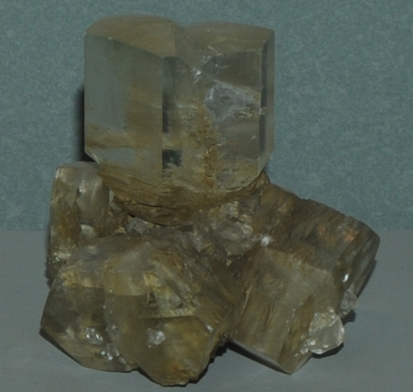
|
|
Index |